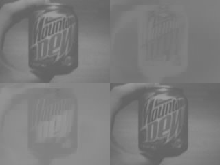

Polaroid Digital 320 Camera
While digging around in my collection of junk (consisting of different hardware and electronics gathered over time), I found an old digital camera with the label "Polaroid Digital 320", presumably made sometime in 2001.
I searched the web to see if there was any Linux driver for this camera. It seems that some people have been trying to make a driver some time ago. The effort seems to have faded away, as there was little help to get from Polaroid (the camera maker) and Xirlink (the chip maker).
I decided to try on my own to get the picture data out of the camera, and learn more about the JPEG file format in the process. I was able to get further than the other people that have tried, because I was able to figure out more about the proprietary file format used by the camera, and how it differs from the official JPEG standard. (Details on these differences can be found in the README file in the source code.) This was possible because I made a JPEG decoder from scratch, and made adjustments to it everywhere to see what produced the best picture.
However, the result is not perfect, since there is still information missing about the optimal quantization for the different components in the picture. I attempted to reverse engineer parts of the official TWAIN driver from Polaroid, but with no success.
The source code for the download and decoder tool can be downloaded here. The code is released under a MIT licence, so feel free to reuse the code wherever you want.
The tool produces pictures in the portable PPM and PGM formats. You can use Netpbm to convert them something else.
Here is an example of a picture downloaded in three formats: color, grey scale and raw components (luminance, blue chrominance, red chrominance and another luminance component):
